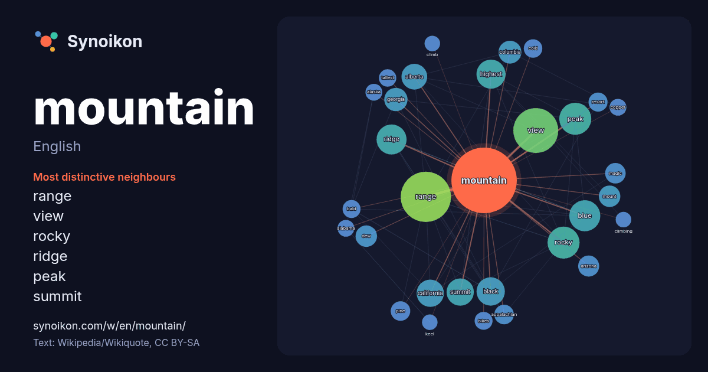

English · word of the day list
mountain
The words found around it in 1928 instances from English Wikipedia, Wikiquote and Hacker News.

Most distinctive neighbours
- range 50×
- view 48×
- rocky 43×
- ridge 34×
- peak 33×
- summit 29×
- alberta 28×
- blue 25×
- dew 24×
- highest 23×
- appalachian 19×
- georgia 17×
- magic 17×
- pine 17×
- columbia 17×
- arizona 17×
- bald 16×
- resort 16×
- bikes 15×
- tallest 15×
× = how many times more often than in general English Wikipedia text.
Most frequent neighbours
- range 126
- view 101
- north 55
- states 53
- peak 51
- rocky 51
- blue 48
- county 48
- located 45
- ridge 45
- highest 42
- black 40
- california 37
- summit 37
- alberta 33
- south 31
- british 29
- king 29
- georgia 27
- united 27
In context
- A mountain is an elevated portion of the surface of a planet, generally with steep sides that show significant exposed bedrock. Although there are no universally Wikipedia snippets · Mountain
- The Mountain (French: La Montagne, pronounced [la mɔ̃taɲ] ) was a political group during the French Revolution. Its members, called the Montagnards (French: Wikipedia snippets · The Mountain
- Brokeback Mountain is a 2005 American romantic drama film directed by Ang Lee and produced by Diana Ossana and James Schamus. Adapted from the 1997 short Wikipedia snippets · Brokeback Mountain
- A mountain range or hill range is a series of mountains or hills arranged in a line and connected by high ground. A mountain system or mountain belt is Wikipedia snippets · Mountain range
- Mountain Dew, stylized as Mtn Dew in some countries and colloquially known as Dew in some areas, is a soft drink brand owned by PepsiCo. The original formula Wikipedia snippets · Mountain Dew
- There are at least 108 mountains on Earth with elevations of 7,200 m (23,622.0 ft; 4.5 mi) or greater above sea level. Of these, 14 are more than 8,000 m Wikipedia snippets · List of highest mountains on Earth
- terms acme, apex, peak (mountain peak), and zenith are synonymous. The term top (mountain top) is generally used only for a mountain peak that is located Wikipedia snippets · Summit
- Stone Mountain is a quartz monzonite dome monadnock and the site of Stone Mountain Park, 15 miles (24 km) east of Atlanta, Georgia. Outside the park is Wikipedia snippets · Stone Mountain
More English words
- art
- autumn
- bell
- bread
- bridge
- cat
- city
- climate
- clock
- death
- desert
- dog
- family
- food
- forest
- garden
- god
- gold
- health
- heart
- history
- honey
- horse
- island
- language
- life
- map
- mirror
- money
- mother
- nature
- power
- rain
- road
- salt
- science
- shadow
- silence
- song
- star
- storm
- summer
- tea
- time
- train
- truth
- water
- winter
- work
Precomputed on 2026-10-09 with default settings (±5 words, medium corpus). The interactive map can refresh it with live data.